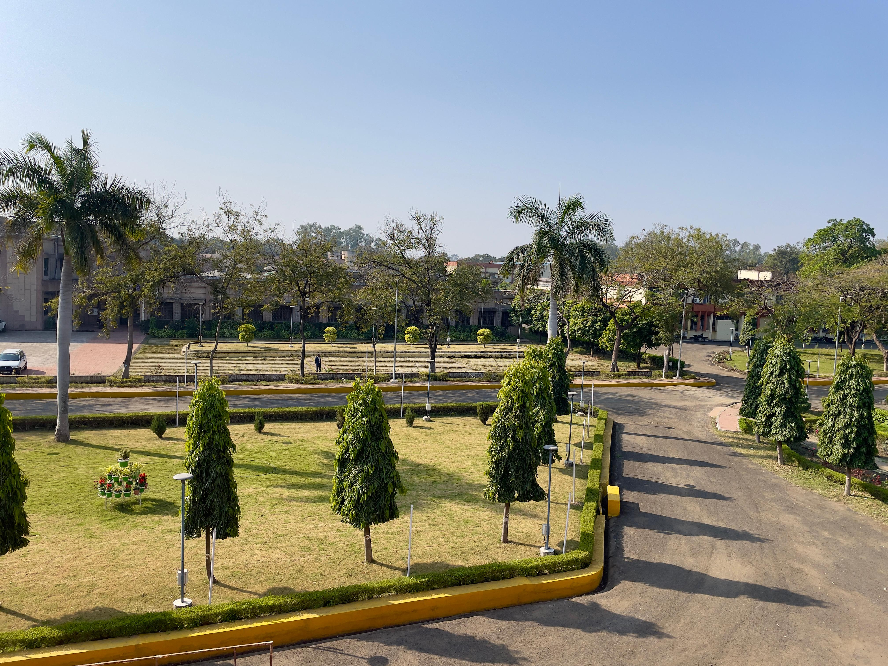
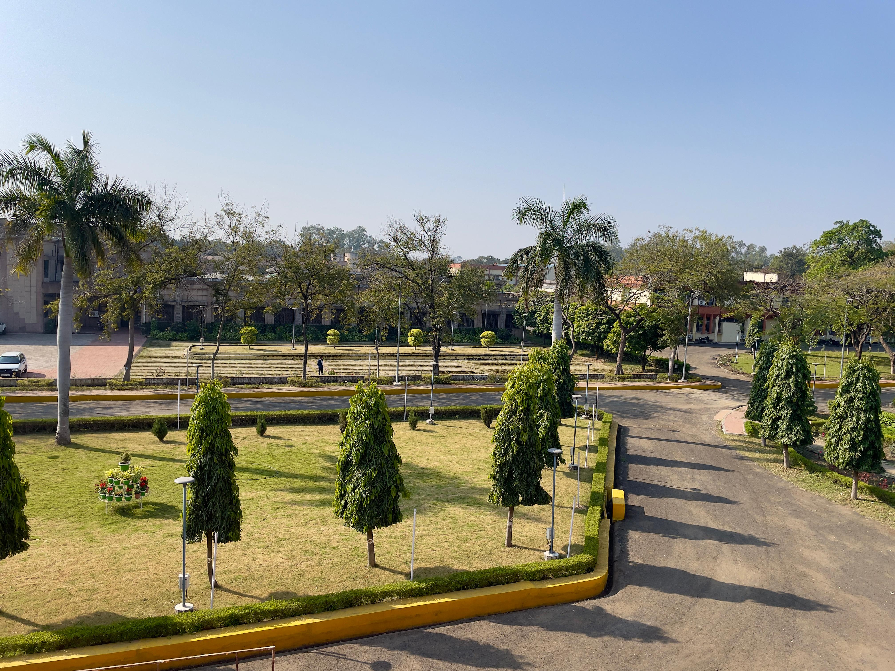

Key Achievements 🏆

Variable Rate Irrigation System 💦
Implemented AI-optimized watering that saved 30% on water usage across 500+ acres, boosting yields by 15% in drought-prone areas. 🌵📈
Crop Sensing & Targeted Spraying 🛩️
Developed drone-based sensors for precise pesticide application, reducing chemical use by 40% while maintaining crop health. 🌿🛡️
Yield Mapping & Forecasting 📊
Created predictive models using satellite data, enabling farmers to forecast harvests with 95% accuracy and optimize planting strategies. 🛰️🌾
Soil Health Monitoring Network 🌱
Deployed IoT sensors across labs and fields, improving soil fertility management and cutting fertilizer needs by 25%. 📡🧪

Automated Harvesting System 🤖
Developed robotic harvesters that increased efficiency by 20% and reduced labor costs in 2025 trials. 🚜💰


 
